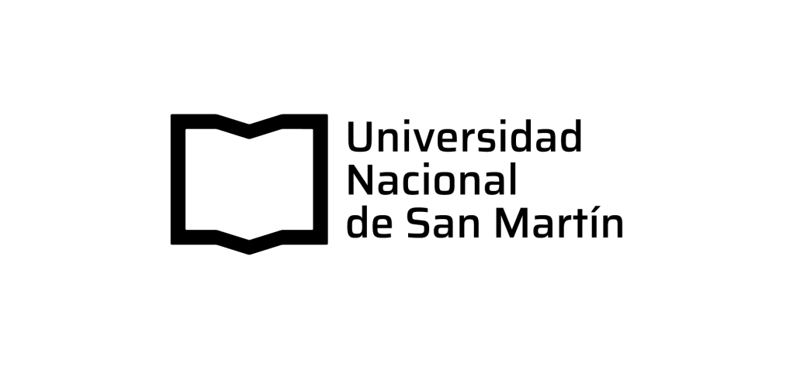

¿Puede un modelo de lenguaje responder una encuesta en lugar de la gente?

2026
Fragmento de entrevista · Trabajo de campo
“A la mañana pongo la radio mientras me hago el mate. Después, en el celular, por WhatsApp me llega de todo: el grupo de la familia, el grupo de las chicas del turno. A la noche, si llego con ganas, pongo un rato el noticiero.” Marcela, 52 años. Auxiliar de enfermería en un hospital público de San Martín.
Escribí 1, 2 o 3 en el chat, y contá en una línea qué te hizo elegir esa.
La respuesta
La generó un modelo de lenguaje en once segundos, a partir de una sola línea de descripción: edad, género, ocupación, lugar, nivel educativo.
Junto con Marcela salieron otras siete personas. Ninguna existe tampoco.
Esa práctica tiene nombre desde 2023. Se llama silicon sampling: muestreo de silicio.
La tesis de esta clase
Que un texto parezca el testimonio de una persona real. Es una propiedad del texto.
Que ese texto diga algo cierto sobre las personas reales. Es una propiedad de la relación entre el texto y el mundo.
Un modelo de lenguaje está optimizado para lo primero. Nada garantiza lo segundo.
Y esto no es un ejercicio de clase
Un medio de noticias estadounidense, Axios, publicó este año una nota sobre el empeoramiento de la mortalidad materna en su país.
Adentro de esa nota había un dato suelto: qué proporción de la gente todavía confía en sus médicos y enfermeras. Venía atribuido a los hallazgos de una consultora, Aaru, para una fundación.
Cualquiera que lea eso asume que hubo una encuesta.
El número salió de una muestra sintética. Ni una sola persona fue consultada para producirlo.
No estaba mal calculado. Era, directamente, un número sin referente: no resumía las respuestas de nadie.
La nota se viralizó, pero no por lo que contaba: por cómo se había fabricado ese dato.
Bloque 1
Definición operativa
Condicionar un modelo de lenguaje con perfiles sociodemográficos de personas (reales o construidos) para que produzca las respuestas que esas personas habrían dado a un instrumento de investigación.
El resultado se llama muestra de silicio. Se la trata, y ese es el problema, como si fuera una muestra.
Paso 1
Se le da al modelo una biografía breve: edad, género, lugar, ocupación, educación, ingreso, a veces voto o religión.
Paso 2
Se le hace la misma pregunta que se le haría a una persona. Idealmente, con la redacción textual del cuestionario original.
Paso 3
Se repite con cientos o miles de backstories y se tabula el resultado como si fuera una encuesta.
El paper del que nace todo
Out of One, Many: Using Language Models to Simulate Human Samples
Lisa P. Argyle, Ethan C. Busby, Nancy Fulda, Joshua R. Gubler, Christopher Rytting & David Wingate
Political Analysis, vol. 31, n.º 3 (2023), pp. 337–351 · doi:10.1017/pan.2023.2 · preprint arXiv:2209.06899 (2022)
Acuña los dos términos que se usan hasta hoy: silicon sample y fidelidad algorítmica.
Lo que se creía
El sesgo de un modelo es uniforme: una propiedad única y pareja del sistema. Es racista, o es sexista, y punto.
Lo que muestran
El sesgo es fino y está correlacionado con la demografía. Si lo condicionás bien, el modelo reproduce la distribución de respuestas de subgrupos humanos distintos.
A esa propiedad la llaman fidelidad algorítmica. El giro del paper es astuto: convierte el sesgo, que era el defecto, en el instrumento de medición.
Argyle et al., 2023 · del abstract
“Es matizada, multifacética, y refleja la compleja interacción entre ideas, actitudes y contexto sociocultural que caracteriza a las actitudes humanas.” Sobre la información contenida en GPT-3. Traducción propia.
Aher, Arriaga & Kalai. “Turing Experiments”: replicar estudios clásicos con humanos simulados. Detectan distorsión de hiperexactitud.
Argyle et al. Nace el término. Y Horton: el homo silicus replica experimentos de economía del comportamiento.
Bisbee et al. La primera refutación fuerte, en la misma revista. Y Park et al.: 1.052 personas entrevistadas dos horas cada una.
Wang et al. en Nature Machine Intelligence: el daño representacional. Lin: las seis falacias.
Ashokkumar et al. en Nature: predicen resultados de experimentos sociales con r = 0,85. El campo sigue abierto.
Traducción para estudios de la comunicación
Un modelo de lenguaje no aprendió qué piensa la gente.
Aprendió cómo se escribe públicamente sobre lo que piensa la gente: en diarios, foros, redes, novelas, guiones, papers, transcripciones.
Un LLM es un archivo comprimido del discurso público. Cuando simula a Marcela, no te devuelve a Marcela: te devuelve la manera en que el discurso público habla de las Marcelas.
Eso lo vuelve un mal sustituto de una entrevista. Y un objeto de estudio fascinante para una carrera de comunicación.
Bloque 2
A favor
Problema 1 de 6
Santurkar y colegas compararon las opiniones de los modelos contra las de 60 grupos demográficos de Estados Unidos.
Encontraron desalineamientos importantes y sistemáticos. Los mayores de 65 años están entre los peor representados.
Ese estudio mide el desajuste dentro del país mejor representado en los datos de entrenamiento.
Todo lo que se escribió en el español que se habla en Argentina es una fracción minúscula del corpus. Nadie midió cuánto se degrada acá. Nadie.
Santurkar, Durmus, Ladhak, Lee, Liang & Hashimoto (2023). Whose Opinions Do Language Models Reflect? arXiv:2303.17548.
Problema 2 de 6
Wang, Morgenstern y Dickerson muestran que simular respuestas de personas de distintos orígenes tergiversa y aplana a los grupos demográficos de maneras específicamente dañinas.
El modelo produce la versión más reconocible de cada grupo, que es otra forma de decir: la más estereotipada.
Es el mismo problema que discutieron en representación mediática, con otro soporte. La diferencia es que ahora el estereotipo viene con formato de dato, y entra por la puerta de la metodología, no por la del análisis.
Wang, Morgenstern & Dickerson (2025). Nature Machine Intelligence, 7, 400–411. Los autores prueban técnicas de mitigación: reducen el daño, no lo eliminan.
Problema 3 de 6 · el más importante
Bisbee y colegas pidieron a ChatGPT que adoptara distintas “personas” y respondiera qué sentía hacia grupos sociales y políticos.
Los promedios se acercaban a los de las encuestas reales. Pero la dispersión era mucho menor y las relaciones entre variables quedaban distorsionadas.
Bisbee, Clinton, Dorff, Kenkel & Larson (2024). Synthetic Replacements for Human Survey Data? The Perils of Large Language Models. Political Analysis, 32(4), 401–416.
Problema 4 de 6
Domínguez-Olmedo, Hardt y Mendler-Dünner encontraron que las respuestas de los modelos a cuestionarios están dominadas por sesgos de orden y de etiqueta: cambia el orden de las opciones y cambia la respuesta.
Al corregirlo aleatorizando el orden, los modelos derivan hacia respuestas casi uniformemente aleatorias.
Domínguez-Olmedo, Hardt & Mendler-Dünner (2024). Questioning the Survey Responses of Large Language Models. NeurIPS 2024, arXiv:2306.07951.
Problema 5 de 6
Si querés validar tu muestra sintética contra una encuesta pública y famosa, tenés un problema: esa encuesta probablemente estaba en los datos de entrenamiento.
El modelo no la está prediciendo. La está recordando. Y no hay forma de distinguir una cosa de la otra desde afuera.
Un trabajo de 2026 argumenta que aun cuando creés estar haciendo un experimento con sujetos simulados, en realidad estás haciendo un estudio observacional: la intervención corre la población simulada, así que los grupos dejan de ser comparables.
Lin, Yun, Matarić, Canny, Gretton & D’Amour (2026). The Illusion of Intervention: Your LLM-Simulated Experiment is an Observational Study. arXiv:2605.20767.
Problema 6 de 6
Los cinco problemas anteriores son técnicos y, en principio, mejorables. Este no.
Los estudios de recepción se hicieron para mostrar que el sentido se produce en la situación, no en el mensaje.
Una muestra sintética es un mensaje sin situación. Es exactamente el objeto que la tradición de la que vienen ustedes pasó cuarenta años criticando.
Un nombre que ustedes ya tienen
Astroturf es césped sintético. En comunicación, el término nombra a la campaña armada que se hace pasar por movimiento espontáneo.
Si un modelo encuesta a otro modelo, y el resultado se publica en un diario como lo que piensa la gente, no hace falta buscar otra categoría. Es opinión sintética moldeando la percepción pública.
Desconfiar de las encuestadoras no es nuevo: viene por lo menos desde 2016, cuando los modelos le daban a Clinton una probabilidad altísima de ganar.
Pero esa desconfianza tenía un piso. La pregunta podía estar sesgada, la muestra podía estar mal armada, mucha gente podía no haber contestado; aun así, alguien había sido consultado.
Es ese piso el que desaparece.
Para qué se inventó esto, hace cien años
En Public Opinion, de 1922, Walter Lippmann sostuvo que nos manejamos con imágenes mentales de la sociedad en la que vivimos, y que esas imágenes son recortes, no la cosa.
Su apuesta era que una democracia necesita instrumentos capaces de contrastar esas imágenes contra el mundo. La encuesta de opinión, imperfecta y todo, podía ser uno de ellos.
El instrumento deja de corregir la imagen y pasa a confirmarla.
Queda hecho de la misma sustancia que venía a controlar: una representación de la sociedad, en vez de una medición de ella.
Encuestar es caro y difícil justamente por la parte que el muestreo sintético elimina: ir a preguntarle a la gente. Sacada esa parte, lo que queda ya no es una encuesta.
Para llevarse anotado
La conclusión del autor no es prohibirlo. Es reclasificarlo: no un reemplazo de participantes, sino una herramienta pragmática de simulación (para role-play, prueba rápida de hipótesis y modelado), siempre que las salidas se validen contra datos humanos. Lin (2025), Advances in Methods and Practices in Psychological Science, doi:10.1177/25152459251357566.
Bloque 3
Investigación de mercado y UX
Hay decenas de empresas que ofrecen encuestados sintéticos: paneles de personas generadas para testear conceptos, publicidades, packaging y mensajes en horas en vez de semanas.
Prometen correlaciones altas con datos reales. Casi nunca publican cómo las midieron.
Cuidado con estas dos cifras. Salen del State of Synthetic Users Report (User Interviews, 2026): una encuesta de la propia industria a 150 investigadores de UX. No es una muestra representativa de nada. La usamos porque muestra la brecha entre adopción y confianza, no como estimación poblacional. Que lo diga la clase también enseña algo.
Por qué la industria empuja
Una encuesta tradicional es cara porque es trabajo humano: llamados, mails, mensajes, seguimientos, gente tocando timbres.
Detrás de un solo número que sale en el noticiero puede haber miles de personas consultadas, una por una.
El sector de investigación de mercado mueve alrededor de 150.000 millones de dólares y depende casi enteramente de ese trabajo.
No lo cuentes como conspiración. La presión es económica y es completamente real: un factor de cien a quinientos en el costo cambia qué investigaciones son posibles. El argumento de la clase no es que las empresas mientan, es que ese ahorro se paga con validez, y que casi nadie está contabilizando ese precio.
No son startups sueltas
Gallup corre algunas de las encuestas más citadas del mundo, y su autoridad se construyó justamente sobre el rigor del muestreo.
Que entren ellos marca que esto dejó de ser un experimento académico y pasó a ser infraestructura de la industria.
El contraste que conviene tener a mano: en la víspera de la elección presidencial estadounidense de 2024, la misma consultora del caso de Axios corrió una simulación de la elección y le dio ganadora a Kamala Harris.
El resultado más fuerte a favor, hasta hoy
Ashokkumar, Hewitt, Ghezae y Willer armaron un archivo de 70 experimentos preregistrados con muestras representativas de Estados Unidos: 469 efectos y 119.330 participantes.
Le pidieron a un modelo que simulara cómo respondería una muestra representativa a cada estímulo, y estimaron el efecto comparando condiciones.
Ashokkumar, Hewitt, Ghezae & Willer (2026). Large language models can predict the results of social science experiments. Nature, 8 de julio de 2026. Iguala o supera la precisión de pronosticadores humanos expertos.
Park y colegas entrevistaron a 1.052 personas durante dos horas cada una y construyeron un agente por persona a partir de esa entrevista.
Después compararon las respuestas del agente con las de la persona real, contra un patrón exigente: la consistencia de cada persona consigo misma al responder lo mismo dos semanas después.
Park, Zou, Kamphorst, Egan, Shaw, Hill, Cai, Morris, Liang, Willer & Bernstein. arXiv:2411.10109. Publicado originalmente como Generative Agent Simulations of 1,000 People.
Probar veinte versiones de una campaña con audiencias simuladas para elegir cuáles cuatro se testean con gente.
Simular cómo distintos públicos leen un mismo titular, para generar las categorías de análisis, no para medirlas.
Sondear reacciones posibles antes de armar el focus group real y decidir por dónde entrar.
En los tres, el modelo decide qué se va a preguntar. En ninguno, el modelo provee la respuesta. El trabajo de campo con humanos no desaparece: se hace mejor apuntado.
Bloque 4 · En vivo
Demo A · La muestra ingenua
P2 y P3 están redactadas igual que los ítems del Digital News Report. Sin esa armonización, la comparación contra el dato real no sería válida. Es el primer error que comete todo el mundo.
Demo A · Salida de Claude Opus 5, 4 sep 2026
La radio a la mañana, Radio 10 o La Red. Y por WhatsApp me llega de todo: el grupo de la familia, el del turno.
P2 NO · P3 SÍ
Todo por el celu. Me aparece solo en Instagram y TikTok. Diario no leo, la tele tampoco, eso es de mis viejos.
P2 NO · P3 SÍ
Leo el diario todos los días, Página/12 de toda la vida. Radio Nacional a la mañana y el noticiero a la tarde.
P2 SÍ · P3 NO
Sigo en X, que está cada vez peor pero es donde primero pasan las cosas. Newsletters, Cenital. Tele cero.
P2 NO · P3 SÍ
Instagram, básicamente. Y lo que se comenta en el local, que es como me entero de la mitad de las cosas.
P2 NO · P3 SÍ
La radio, siempre, la AM en la camioneta. Y portales del campo. Los canales de Buenos Aires no cuentan lo de acá.
P2 NO · P3 NO
Los portales de acá, LMNeuquén y Río Negro. Y Facebook, donde está lo del sindicato y lo del barrio.
P2 NO · P3 NO
YouTube y TikTok, sobre todo. Para lo de acá, Rosario3. La tele casi nada, salvo que pase algo grave.
P2 NO · P3 SÍ
Respuestas abreviadas para proyección. El texto completo, en kit-demo/salidas-pregeneradas.md.
Demo A · Tabulación
Radio 10 · La Red · WhatsApp · Instagram · TikTok · Página/12 · Radio Nacional · X · Cenital · Infocampo · LMNeuquén · Río Negro · Facebook · YouTube · Rosario3 · “el noticiero” (×3, sin nombre)
La slide que importa
Columna real: Reuters Institute, Digital News Report 2026, capítulo Argentina. Mismo país, mismo año, ítems redactados igual.
El error más grave no está en la tabla
La jubilada docente lee Página/12 y escucha Radio Nacional. El diseñador de Palermo está en X y suscripto a Cenital. El pibe de 19 está en TikTok. El productor agropecuario escucha AM en la camioneta.
Ocho de ocho. Ni una excepción, ni una contradicción, ni una persona que consuma algo que “no le toca”.
Las correlaciones existen, pero son mucho más ruidosas: hay jubiladas en TikTok, pibes de 19 que escuchan AM porque el padre la tiene puesta, y gente que no consume nada.
El modelo no reproduce la estructura del consumo. Reproduce el estereotipo de la estructura del consumo.
Es exactamente el hallazgo de Tastes without distinction (Ma, Zhang, Ang & Chen, 2026): sobre 554.940 sustitutos sintéticos contrastados contra una encuesta real de participación cultural, la relación entre gustos y posición social queda “completamente distorsionada”, con las asociaciones de edad y género caricaturizadas. Y es el problema 3, el de Bisbee.
Demo B · El experimento de la varianza
Dos: la de la radio, 7 de 10, y la del WhatsApp, 3 de 10. Y en el fondo son la misma, porque la mitad hace las dos cosas.
La que no se entera de nada y no le importa. La que se quedó sin datos el día 20. La que se entera por una compañera del turno noche. La que ese día tenía un problema en casa y no miró nada.
Demo B · Al revés
Los medios de Buenos Aires cuentan la economía desde una oficina. Hablan del dólar todo el día pero no te dicen cómo está el precio de los insumos, que es lo que a nosotros nos mata. Cada uno tira para donde le conviene, según quién le pone la plata.
Hay un sesgo estructural bastante evidente: la cobertura económica está escrita para el que ya entiende de finanzas, y responde a los intereses de los anunciantes. Igual el problema no es solo de los medios, la discusión pública está muy polarizada.
Lo que veo es que hablan de números que no tienen nada que ver con lo que a mí me pasa cuando voy al supermercado. Y siempre depende del canal, cada uno cuenta lo que le conviene.
Los tres dicen lo mismo con distinto vocabulario. Los tres identifican intereses económicos detrás de los medios, los tres matizan, ninguno se contradice, ninguno se va de tema, ninguno dice una barbaridad y ninguno contesta “no sé, ni idea”. El modelo no está simulando tres personas: está simulando tres registros de habla sobre una única opinión. Aher, Arriaga y Kalai lo llamaron distorsión de hiperexactitud.
Demo C · El uso defendible
Una guía de entrevista de seis preguntas. Podría ser la de cualquiera de ustedes.
El primer paso ya muestra algo sin necesidad de análisis: la pregunta menos “inteligente” de las seis es la que produce material.
Demo C · Lo que devuelve
Jerga pura. No usa ninguna de esas expresiones: te devuelve silencio o una respuesta actuada.
Jerga y tendenciosa: “crítico” es socialmente deseable. Nadie contesta que no.
Pide una precisión que nadie tiene. Vas a tabular un número inventado como si fuera un dato.
Cerrada, se contesta en una palabra. Y “los medios” en singular no existe: se confía en unos y no en otros.
Introduce una categoría tuya, no suya. Ella no piensa su experiencia con esa palabra.
La mejor con diferencia. No presupone nada, no sugiere respuesta y produce material para repreguntar. Sin cambios.
El modelo también propone una reescritura para cada una. Están en kit-demo/salidas-pregeneradas.md y en el handout.
Si se llevan una sola frase
El silicon sampling sirve para generar preguntas, no para responderlas.
Bloque 5
Si no podés escribir estos seis puntos con honestidad, la respuesta no es escribirlos igual: es no usar el método.
Para la próxima
La consigna completa y la rúbrica están en el campus. No se evalúa que la muestra sea buena. Se evalúa que sepan por qué no lo es.
Volvamos al pizarrón
No importa el número. Importa esto: lo que los convenció no fue la evidencia, fue el mate, el grupo del turno y el “si llego con ganas”.
Un modelo de lenguaje es extraordinariamente bueno produciendo detalles costumbristas, porque el detalle costumbrista abunda en los textos con los que se entrenó.
Su trabajo como investigadores no es detectar si un texto suena real. Es preguntar de dónde salió, contra qué se puede contrastar y qué pasa si está mal. Eso vale para una muestra sintética, para una encuesta, para una fuente periodística y para un paper.
Para leer
Argyle, L. P., Busby, E. C., Fulda, N., Gubler, J. R., Rytting, C. & Wingate, D. (2023). Out of One, Many: Using Language Models to Simulate Human Samples. Political Analysis, 31(3), 337–351. doi:10.1017/pan.2023.2 · el fundacional
Bisbee, J., Clinton, J. D., Dorff, C., Kenkel, B. & Larson, J. M. (2024). Synthetic Replacements for Human Survey Data? The Perils of Large Language Models. Political Analysis, 32(4), 401–416 · la refutación
Lin, Z. (2025). Six Fallacies in Substituting Large Language Models for Human Participants. Advances in Methods and Practices in Psychological Science. doi:10.1177/25152459251357566 · el más legible de todos
Wang, A., Morgenstern, J. & Dickerson, J. P. (2025). Large language models that replace human participants can harmfully misportray and flatten identity groups. Nature Machine Intelligence, 7, 400–411.
Santurkar, S., Durmus, E., Ladhak, F., Lee, C., Liang, P. & Hashimoto, T. (2023). Whose Opinions Do Language Models Reflect? arXiv:2303.17548.
Domínguez-Olmedo, R., Hardt, M. & Mendler-Dünner, C. (2024). Questioning the Survey Responses of Large Language Models. NeurIPS 2024. arXiv:2306.07951.
Ashokkumar, A., Hewitt, L., Ghezae, I. & Willer, R. (2026). Large language models can predict the results of social science experiments. Nature, 8 de julio de 2026.
Park, J. S. et al. (2024–2026). LLM Agents Grounded in Self-Reports Enable General-Purpose Simulation of Individuals. arXiv:2411.10109.
Ma, X., Zhang, M., Ang, S. & Chen, M. (2026). Tastes without distinction: silicon samples and the synthetic construction of tastes. arXiv:2606.30085 · el más cercano a consumos culturales
Aher, G., Arriaga, R. I. & Kalai, A. T. (2023). Using Large Language Models to Simulate Multiple Humans and Replicate Human Subject Studies. arXiv:2208.10264.
Horton, J. J. (2023). Large Language Models as Simulated Economic Agents: What Can We Learn from Homo Silicus? arXiv:2301.07543.
Lin, V., Yun, T., Matarić, M., Canny, J., Gretton, A. & D’Amour, A. (2026). The Illusion of Intervention: Your LLM-Simulated Experiment is an Observational Study. arXiv:2605.20767.
Lippmann, W. (1922). Public Opinion. Harcourt, Brace and Company · por qué existe la encuesta de opinión
Reuters Institute (2026). Digital News Report 2026, capítulo Argentina · fuente de validación
SINCA. Encuesta Nacional de Consumos Culturales, ediciones 2013, 2017, 2022 y 2023. Microdatos descargables · fuente de validación